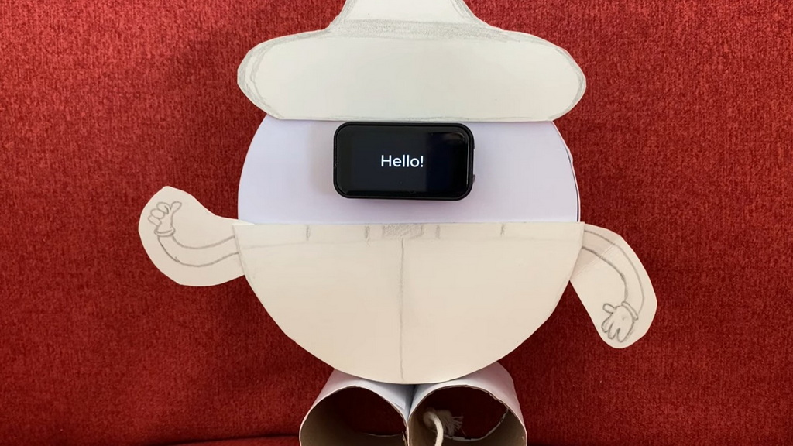
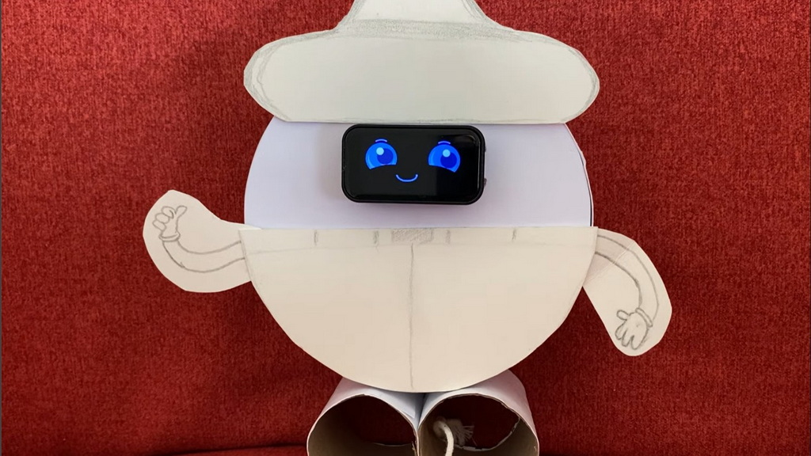
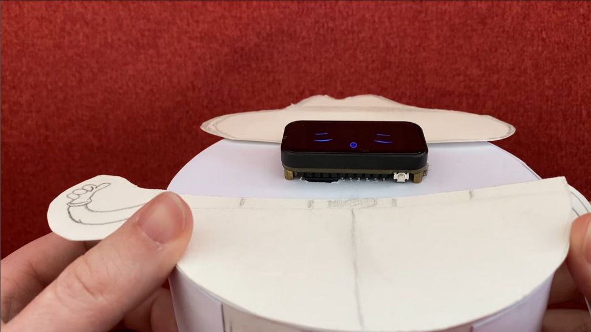
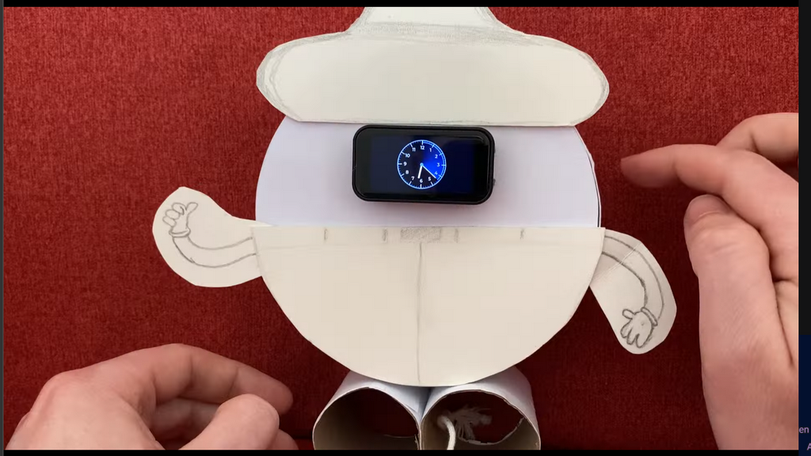

📸 Gallery




⚠️ Disclaimer — ASCII Art
Some coin flip ASCII art displayed in the Apps Menu was sourced from asciiart.eu. All Pokémon characters and names are trademarks of The Pokémon Company International. This project is not affiliated with, sponsored by, or endorsed by The Pokémon Company. The art is used here solely for non-commercial, personal, educational purposes.
✨ Features
| Big clock face | HH:MM in a full-screen custom font (Montserrat 96px) |
| Splash screen | "Hello!" on cold boot (2.5 s); "Salut!" on wake from sleep (1 s) |
| Animated GIFs | Smile (day) and Sleep (night) emotions from SD card |
| Scheduled animation | GIF plays on a configurable minute interval, 800 ms fade back |
| Night mode | Sleep GIF used automatically between 20:00 and 07:00 |
| Alarm | Configurable wake-up time, custom buzzer pattern, alarm animation |
| Countdown timer | Live MM:SS on clock face, timer animation on completion |
| Emotion tilt | Tilt the device to change emotion in real-time |
| Clock editor | Sets HH:MM and DD/MON/YYYY offline, no WiFi needed |
| WiFi + NTP | Connects at boot, syncs time automatically; DST-aware timezone |
| Battery monitor | Live percentage, voltage, ADC raw — with LiPo discharge curve |
| Apps menu | Math challenge gate, Rock Paper Scissors, Rolling Dice, Coin Flip |
| SD card config | All settings in /config.ini — no recompile needed |
🛠 Hardware
Board: Waveshare ESP32-C6 Touch LCD 1.47"
Select ESP32C6 Dev Module in Arduino IDE. The board integrates the ST7789 display, AXS5106L touch controller, QMI8658 IMU, ETA6098 battery charger, and SD card slot on a single compact PCB.
| Component | Value |
|---|---|
| Controller | ST7789 |
| Resolution | 172 × 320 px |
| Interface | SPI (HWSPI) |
Pin Map & Wiring
Connect a passive buzzer (not active) between GPIO 5 and GND. If the buzzer is very loud, add a 100 Ω resistor in series.
| Signal | GPIO |
|---|---|
| Display DC / CS / RST | 15 / 14 / 22 |
| SPI SCK / MOSI / MISO | 1 / 2 / 3 (MISO SD only) |
| SD Card CS | 4 |
| Touch I²C SDA / SCL | 18 / 19 |
| Battery ADC | 0 |
| Passive Buzzer | 5 → GND |
💻 Software Dependencies & Setup
Install via Arduino IDE Library Manager: LVGL (v9.5.0), Arduino_GFX_Library, FastIMU, and board-specific esp_lcd_touch_axs5106l.
lv_conf.h Settings
Edit Arduino/libraries/lvgl/src/lv_conf.h:
#if 1 /* Enable the file */
#define LV_USE_STDLIB_MALLOC LV_STDLIB_CLIB
#define LV_USE_STDLIB_STRING LV_STDLIB_CLIB
#define LV_USE_STDLIB_SPRINTF LV_STDLIB_CLIB
#define LV_USE_GIF 1
/* Enable Montserrat 14, 16, 48 */
SD Card Setup (FAT32)
GIF files must be resized to 160 × 86 pixels to avoid RAM exhaustion.
SD root/
├── config.ini
├── last_seen.txt
└── cruzr_emotions/
├── cruzr_smile.gif
├── cruzr_sleep.gif
├── cruzr_sad.gif
├── cruzr_joy.gif
├── alarm_animation.gif
└── timer_animation.gif
📱 Usage & Interface
Home Screen Touch Zones
┌─────────────────────────────────────────┐
│ Smile GIF (UL) │ Sleep GIF (UR) │
├───────────────────┼─────────────────────┤
│ Status (LL) │ Battery (LR) │
└─────────────────────────────────────────┘
LONG-PRESS anywhere → Carousel menu
- Status (LL): Shows WiFi, NTP, and Brightness. Tilt left/right to adjust brightness.
- Battery (LR): Live %, voltage. Long-press for software power-off.
- Emotion Tilt: Tap UL (Smile). While playing, tilt the device to change emotions (sad, joy, sleep) in real-time via IMU.
- Apps Menu: Long-press the smile GIF → pass Math Gate → access Rock Paper Scissors, Dice, Coin Flip.
Config.ini Reference
[wifi]
enabled = true
ssid = myhomewifi
password = changeme
[clock]
ntp_server = pool.ntp.org
tz = CET-1CEST,M3.5.0,M10.5.0/3
[alarm]
enabled = true
time = 07:10
[animation]
schedule = true
duration = 10
⚡ Build & Flash
- Install ESP32 board support in Arduino IDE.
- Select ESP32C6 Dev Module.
- Set USB CDC On Boot to
Enabled(Crucial!). - Set Flash Size to
8MB (64Mb)and Partition Scheme to8MB with spiffs (3MB APP/1.5MB SPIFFS). - Upload at `921600` baud rate and open Serial Monitor at `115200`.
Troubleshooting
| Symptom | Likely cause | Fix |
|---|---|---|
| Black screen after boot | Display init failed | Check SPI wiring; confirm `gfx->begin() OK` in serial log |
| `SD card mount failed` | Wrong MISO pin or card not FAT32 | Confirm GPIO 3 = MISO; reformat card as FAT32 |
| `Not enough RAM for GIF` | GIF still full-size | Resize exactly to 160 × 86 px |
| Apps menu not opening | Wrong touch zone | Long-press the smile GIF specifically, not just anywhere |
🏗 Architecture Notes
- No blocking calls in
loop(): Everything runs as LVGL timer callbacks. - SD ↔ LVGL filesystem bridge: Allows `lv_gif_set_src("S:/...")` natively.
- DST-aware timekeeping: `configTzTime` sets POSIX TZ handling DST automatically.
- Emotion tilt in-place swap: Swaps the GIF path dynamically based on IMU data without rebuilding the overlay.